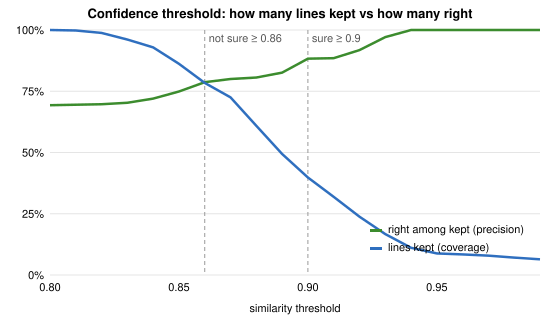

Problema
Cauza principală: mâncarea e uitată în frigider până expiră.
Soluția
- Frigiderul sortat după expirare: expirat · de folosit · proaspăt
- Adăugare în 3 atingeri, prin cod de bare sau poza bonului
- Memento zilnic, rețete moldovenești, statistici în lei
- Funcționează offline, în RO / RU / EN, gratuit
Poza bonului→OCR pe telefon→AI pe telefon→tu confirmi
Bonul nu părăsește telefonul. AI-ul doar sugerează; omul decide.
Ipoteza
H2: rândurile „sigure” sunt corecte ≥ 90 %. H3: modelul ≤ 150 MB.
Scrisă înainte de testul pe date reale.
Rezultate pe date reale
| Metodă (macro-F1) | Kaufland v1 | Kaufland v2 | Set ținut deoparte | Sintetic |
|---|---|---|---|---|
| Dicționar exact | 54,2 | 54,2 | 47,7 | 21,4 |
| Dicționar fuzzy (Levenshtein) | 48,3 | 75,2 | 41,1 | 84,4 |
| MiniLM-L12 | 40,9 | 53,2 | 35,9 | 68,0 |
| e5-small | 53,1 | 73,8 | 32,8 | 87,2 |
| Frigo hibrid | 58,6 | 74,6 | 48,3 | 86,4 |
214 produse reale: 84 Kaufland Moldova (categoria magazinului) + 130 Open Food Facts (ținute deoparte) · 109 rânduri sintetice.
H1 respinsă H2 respinsă pe date reale H3 confirmată: 118 MB 12–14 ms/rând în browser

Ce am învățat
- Testele sintetice au supraestimat AI-ul cu până la 38 de puncte.
- Lista de produse contează mai mult decât modelul: +16–27 puncte după completare.
- Încrederea calibrată pe date sintetice nu se transferă → omul verifică fiecare rând.
- AI-ul ajută la sinonime RU ↔ RO ↔ EN (ЧЕСНОК = USTUROI).
Valoare economică
lei economisiți de o familie pe an, la o reducere a risipei de 25–35 % (scenarii)
1 000 de familii: 1,2–1,6 mil. lei și 41–57 tone de mâncare salvată pe an
Cost pentru familie: 0 lei. AI-ul rulează pe telefon, fără taxe pe cerere.
AI responsabil
- Datele bonului rămân pe telefon
- Fiecare sugestie AI e etichetată („sigur” / „nesigur”)
- Ghicitul nesigur e ascuns; utilizatorul confirmă tot
- Model și versiune fixate (e5-small, MIT); AI-ul se poate opri și șterge
- Toate cererile către asistentul de programare AI sunt în AI_LOG.md
Tehnologie
Next.js 16 · TypeScript · Supabase (Postgres, RLS pe 8 tabele) · Vercel · Tesseract.js · Transformers.js · Web Push · Service Worker · 64 teste unitare + 20 teste în browser (Chrome + Safari)
Pași următori: bonuri termice reale, pilot cu 5–10 familii, viteză pe telefoane reale.